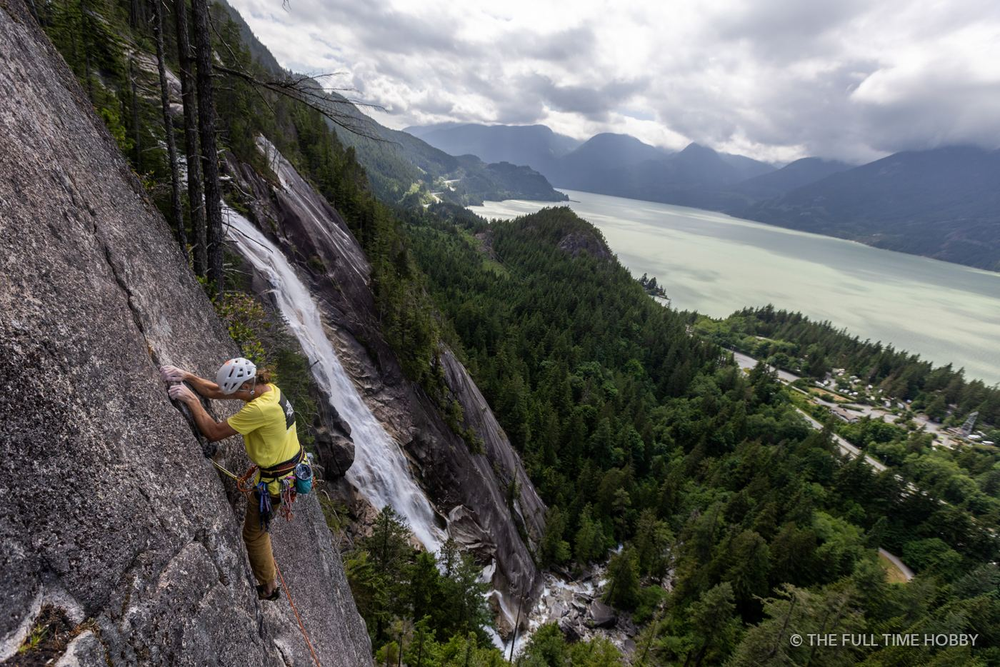

First, know where the sun is
Squamish is surrounded by mountains, so the sun rises late and sets early behind ridgelines, and the best colour often happens on the peaks rather than in the sky. Before any shoot I check an app like PhotoPills or The Photographer's Ephemeris to see exactly where the sun will rise and set. In general, west-facing views over Howe Sound and the Tantalus Range are best at sunset, and the alpenglow on the Tantalus peaks is spectacular at both ends of the day.
1. Stawamus Chief summits (sunrise)
The classic. From the summits you look straight down on Howe Sound, the town and the Squamish River. It's a steep hike with ladders and chains near the top, so allow plenty of time in the dark, bring a headlamp and a warm layer, and don't go in icy conditions. The payoff is light pouring down the Sound.
2. Tantalus Lookout (sunrise and sunset)
A pull-off on Highway 99 north of town with a huge view of the glaciated Tantalus Range across the Squamish valley. Zero hiking required, which makes it perfect for a quick alpenglow session. Use a telephoto to pick out ridgelines and the glaciers.
3. The Squamish Estuary (sunset)
The dyke trails around the estuary give you open views west toward the Tantalus Range and south to the Chief, with reflections in the channels on calm evenings. It's also great for birds. Stay on the trails: it's a protected wildlife area.

4. Smoke Bluffs (sunset)
A short walk from downtown, the Smoke Bluffs loop has viewpoints over town, the estuary and Howe Sound. Climbers on the walls in golden light make great foreground interest.
5. Sea to Sky Gondola (sunset, seasonally)
From the summit area you get a big view of Howe Sound and the surrounding peaks. Sunset is only possible when the gondola is running late enough, so check operating hours for the season.
6. Porteau Cove (sunset)
About 20 minutes south of Squamish, Porteau Cove looks west across Howe Sound to Anvil Island and the mountains beyond. The pier and the rocky beach make good foregrounds. It's one of the most reliable sunset spots on the corridor.

7. Brohm Lake and Alice Lake (sunrise)
On cold, calm mornings, mist sits on the lakes and the water turns to glass. Get there before the wind and the crowds. Brohm Lake is right off the highway; Alice Lake is inside the provincial park.
Tips for Squamish light
- Watch the clouds, not the forecast icon. Broken cloud is what you want; a fully overcast day usually means no colour.
- Stay after sunset. Blue hour over the water is often better than the sunset itself.
- Wind matters. Squamish afternoons are often windy in summer, so reflections are a morning game.
- Bring a telephoto. Compressing ridgelines and alpenglow is where the mountains really shine.
- Be safe in the dark. Headlamp, layers, and tell someone where you're going.
For more on the corridor's big landscapes, see Sea to Sky landscape photography, and for night skies, photographing the northern lights.